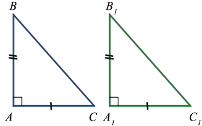
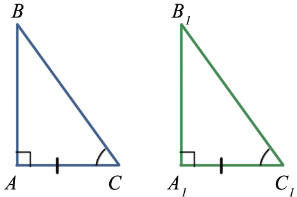
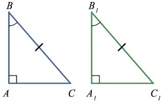
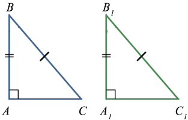
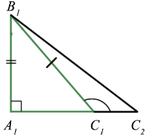

Признаки равенства прямоугольных треугольников позволяют сравнивать прямоугольные треугольники лишь по двум элементам, так как любые два прямых угла равны.
1. Признак равенства по двум катетам
Если катеты одного прямоугольного треугольника соответственно равны катетам другого, то такие треугольники равны.
Данный признак следует из первого признака равенства треугольников.
Пример:

△ABC = △A1B1C1, т.к. AB = A1B1 и AC = A1C1.
2. Признак равенства по катету и острому углу
Если катет и прилежащий к нему острый угол одного прямоугольного треугольника соответственно равны катету и прилежащему к нему острому углу другого, то такие треугольники равны
Данный признак следует из второго признака равенства треугольников.
Пример:

△ABC = △A1B1C1, т.к. AC = A1C1, ∠C = ∠C1
3. Признак равенства по гипотенузе и острому углу
Если гипотенуза и острый угол одного прямоугольного треугольника соответственно равны гипотенузе и острому углу другого, то такие треугольники равны
Пример:

△ABC = △A1B1C1, т.к. BC = B1C1, ∠B = ∠B1
Так как сумма двух острых углов прямоугольного треугольника равна 900, то в таких треугольниках два других острых угла также равны, поэтому данные треугольники равны по второму признаку треугольников, т.е. по стороне(по гипотенузе) и двум прилежащим к ней углам, что и требовалось доказать.
4. Признак равенства по катету и гипотенузе
Если гипотенуза и катет одного прямоугольного треугольника соответственно равны гипотенузе и катету другого, то такие треугольники равны
Пример:

△ABC = △A1B1C1, т.к. BC = B1C1, AB = A1B1
Дано: △ABC, △A1B1C1, BC = B1C1, AB = A1B1
Доказать: △ABC = △lA1B1C1
Доказательство:
Рассмотрим данные треугольники:
Так как ∠A = ∠A1, то △ABC можно наложить на ∠A1B1C1 так, что вершина A совместится с вершиной A1, а стороны AC и AB наложатся соответственно на лучи A1C1 и A1B1. При этом вершина B совместится с вершиной B1, потому что AB = A1B1. Но тогда вершина C также совместится с вершиной C1. Действительно, если предположить, что точка C совместится с некоторой другой точкой C2 луча A1C1, то получим равнобедренный треугольник C1B1C2.

В ∠C1B1C2 углы при основаниине равны (∠C2 - острый, а ∠C1 - тупой, так как он смежный с углом B1C1A1, который является острым). А это невозможно, так как у равнобедренного треугольника углы у основания равны, следовательно, вершина C совместится с вершиной C1. А это значит, что полностью совместятся треугольники ABC, A1B1C1, т.е. они равны, что и требовалось доказать.